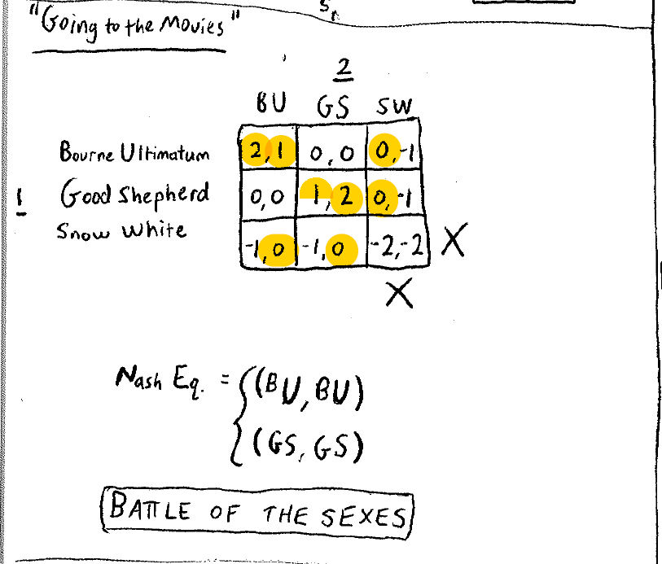
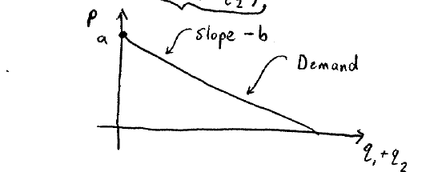
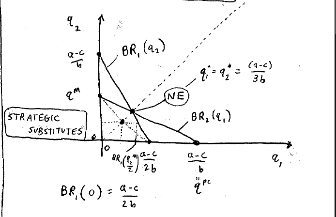
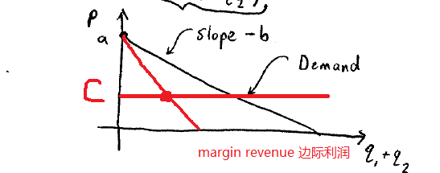

Lecture 6
约会博弈

这个纳什均衡的点有一些不同，因为达到纳什均衡时会存在利益的冲突。实际上这种通过沟通达到的纳什均衡是更难的。
Cournot Dupoly 古诺的双寡头模型
玩家：两个公司
策略：生产的产品互为替代品，生产的数量。
成本：，c是边际成本。
price：，生产的数量越多，价格越低。
因此我们可以画出需求曲线：

收益：
将代入：
接下来我们求解纳什均衡点。
每一个都对应一个使得最大化，对该式子进行求导：
二阶求导：
因此上面一阶导数是单调递减的，那么最开始的函数是存在最大值，也就是在一阶导数为0的地方。
BR: best response.
那么零点为
同理可以得到玩家2的最佳对策：
这两条最佳对策的曲线的交点就是纳什均衡点。

这张图里面有非常多的有趣的信息：
当玩家2生产数量时，此刻玩家1形成垄断，那么垄断时生产的数量应该是多少？
应该是边际利润等于边际成本的时候，此刻为垄断生产的数量。
此刻我们需要补充一些经济学的知识：

也就是
求得，这就是垄断生产的产量。与上面的最佳对策算出来的结果是一致的。
当为多少的时候，使得停产？
当边际利润与需求曲线的交点就是。也就是这个时候的生产成本等于卖出的价格的时候，这个时候企业一毛钱都挣不到。
，专业名词：完全竞争产出。
总结
这个和合伙人的博弈不同，合伙人是其中一个玩家约投入，那么该玩家也会越投入；而这个游戏是相反的（也就是曲线的斜率是负的）。
什么时候行业利润最大？垄断的时候。
但是还有一种方法：那就是两家签订协议，大家都生产垄断的数量的一半（1. 这样是违法的；2. 同时虽然表面签订了协议，但是因为不是最佳对策，因此可能会偷偷增加生产，最终达到纳什均衡；3. 实际上还会有更多的公司加入到其中）。
将完全竞争、达到纳什均衡、垄断的数量和价格进行对比：
| 完全竞争 | 纳什均衡点 | 垄断 | |
|---|---|---|---|
| Q | (a-c)/b（最大） | (a-c)/3*2 | (a-c)/2（最小） |
| Price | 最小 | 中等 | 最大 |